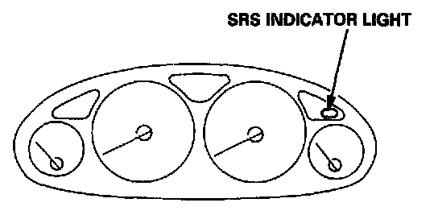

Reading and Clearing Diagnostic Trouble Codes
SELF-DIAGNOSIS FUNCTIONThe SRS unit includes a self-diagnosis function. If there is a failure in the sensors, SRS unit, inflator, or their circuits, the SRS indicator light in the gauge assembly comes ON.

As a system check, the SRS indicator light also comes on when the ignition is first turned ON to the (II) position. If the light goes off after approximately six seconds, the system is OK.
If the SRS indicator light remains on (or fails to come on in the system check mode), one of the SRS components (or the wiring/connectors in-between) is faulty.